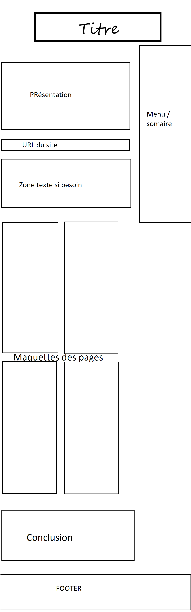
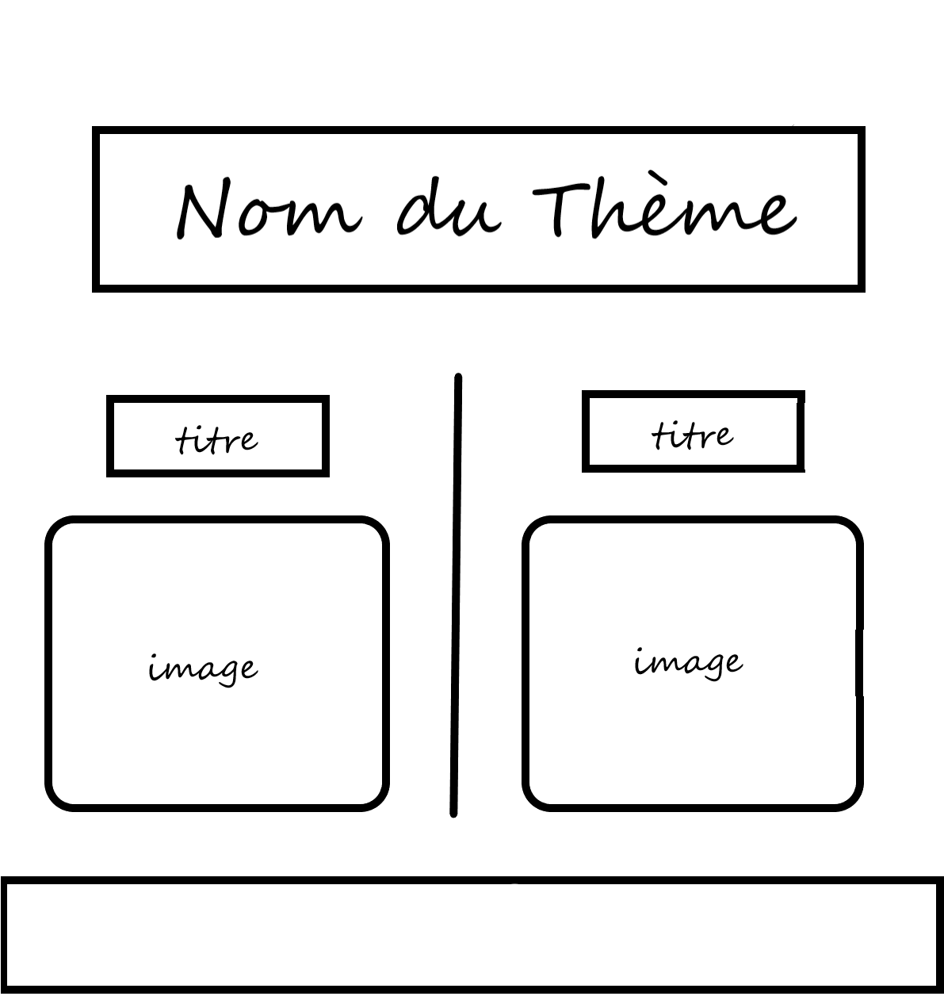
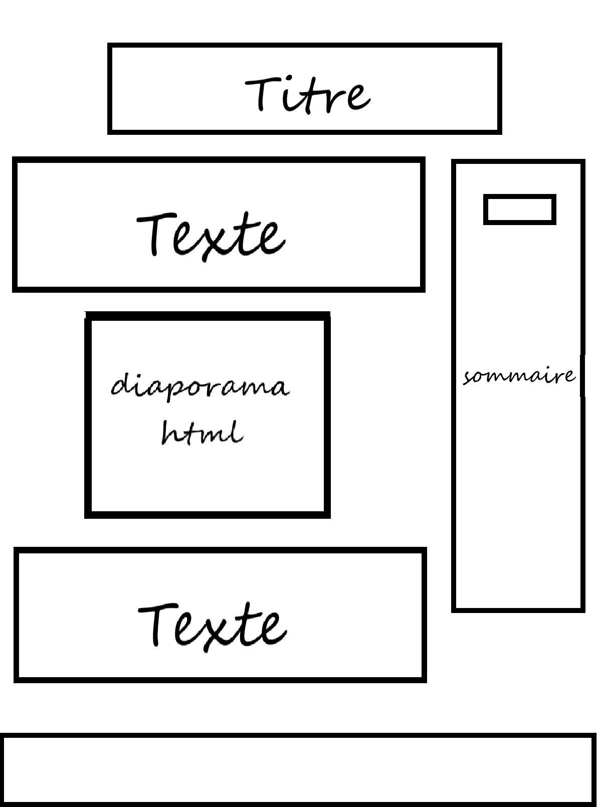
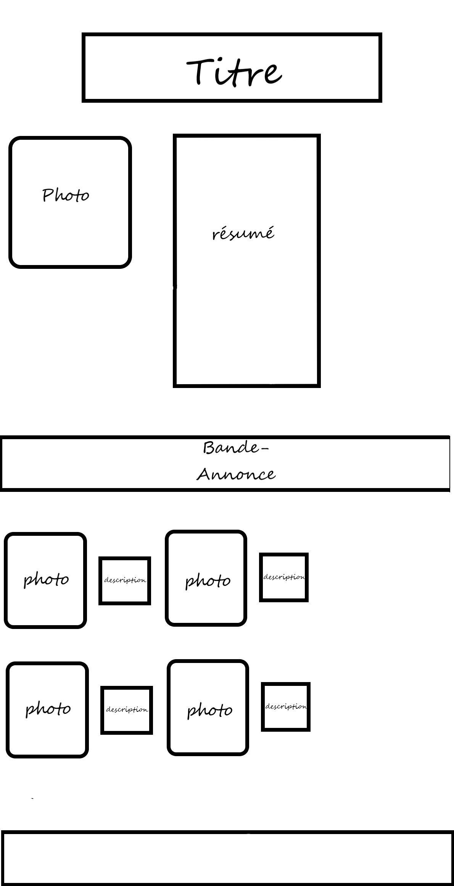

Bienvenue sur notre projet Web qui a pour theme les série, nous avons choisi 10 série différente dont 5 américaine et 5 asiatique, elles sont découpé en 5 genre différents; ce projet a été fais par 2 éleve de S1 dans le groupe B qui sont :
Notre projet web utilise des élément pas vue en cours comme le @keyframe et le animation
dans le
CSS de la page principale.
Ces deux fonction sont dépendnate l'une de l'autre, le @keyframe permet de
déterminer les prinipaux temps de l'animation
les valeurs en poucentage repésente le temps, qui a été mis dans l'atribut animation.
La page est en ligne a l'adresse : https://webetu.iutnc.univ-lorraine.fr/www/fourrie15u/html et a l'addresse https://webetu.iutnc.univ-lorraine.fr/www/xu92u/html
Mais aussi les lien "Haut de la page" utilse des liens invisible qui ont pour id : top pour faire monter la page au niveau du lien (Meme cas pour certain lien dans le menu )
Page a propos
Page intermédiaire
Page principale
Fiche série
Nous avons rencontrer des problemes lors de ce projet pour le menu déroulant et l'adaptation aux nouvelle norme chrome (octobre, changement du fonctionnement des grid avec des pourcentages ) , le site est testé sur Chrome, Firefox et mobile; Nous avons utiliser des médias queries qui sont pour différents plateformes